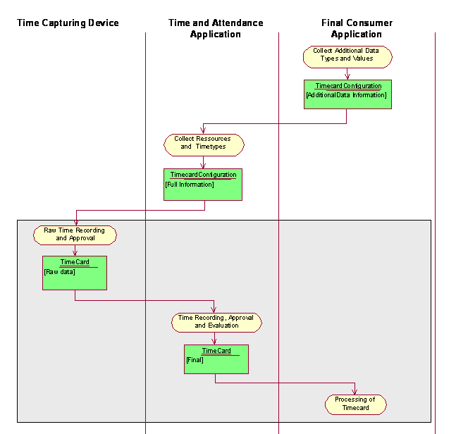
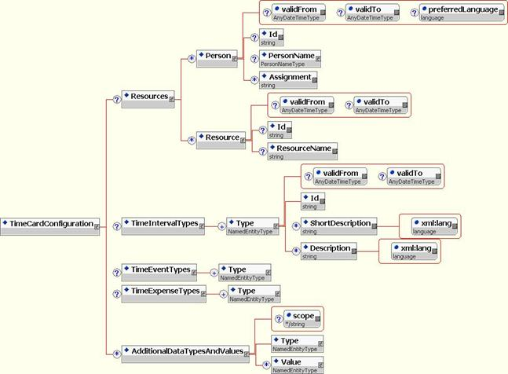

Time Card Configuration
Recommendation, 2007 April 15
Editor:
Andreas Bold, SAP AG
Authors:
Bill Kerr, Oracle Corporation
John Black, Deltek Systems, Inc.
Andreas Bold, SAP AG
Eva Decker, SAP AG
Contributors:
Members of Time Expense Reporting workgroup
Copyright © 2007 HR-XML Consortium, Inc.
Abstract
The HR-XML Time Expense Reporting Workgroup has produced a simple, flexible definition of the elements required to express time and expense data. This document describes an additional schema that allows the trading partners to describe the allowed values for the single elements of a time card. This additional schema is called Timecard Configuration.
Table of Contents
2 Supported Business Processes
2.1.1 Overview Activity Diagram
3.1.2 Schema Elements Explained
3.1.3 Cross Process Object included schema: PersonName-1_2
5 Appendix A - Document Version History
6 Appendix B – Related Documents
7 Appendix C – Reference Examples
1 Overview
1.1 Objective
This document is an add-on to the specification about Time Card (a reference is given in the appendix). It describes the basic process of sending time cards. This basic Time Card process is done in a one-way direction.
The content of a time card (time intervals, time events and expenses) consists of various elements (e.g. person id, time interval types, additional information such as cost center ids, project ids) for which both sender and receiver have to know the allowed values.
Usually, enumerations are a standard method in order to specify allowed values for the schema elements. But enumerations do not work properly in our scenario due to the following reasons:
- Enumerations are static in the schema. But a lot of information in the schema elements has a "transactional" characteristic rather than a static characteristic. It changes with the time. Typical examples are the list of all allowed project ids, order ids, even cost center ids. Also the list of all person ids is changing with the time.
- Even in the case of more static values such as time interval types, a standard enumeration would be very difficult. At least it would be incomplete in almost all cases. For example, absence codes as time interval types may depend from country specific legal regulations (e.g. FMLA is only known in US and would not be a valuable or meaningful value in Europe). Other time interval types may depend on union or company specific rules. In addition, with new regulations, even time interval types may change with the time being.
In the area of connecting Time and Attendance applications to time clock subsystems (in order to transfer time punches such as clock-in, clock-out, start of a project…), since years, it is very common to provide information on allowed values from the receiver of the time events (time and attendance application) to the sender (time clock subsystem) via "downloaded files".
This is our motivation to add a new schema to our business process. This schema has the intention to post information on allowed values for the time card (list of person ids, list of time interval types, list of project ids…) to the sender of the time card. The new schema is called "Time Card Configuration".
1.2 Design Requirements
All main elements of the Time Card Configuration schema are already known in the Time Card schema itself. Please see the corresponding specification document.
Additional elements typically occur in the area of short and long descriptions for element ids. Short and long descriptions are needed in order to automate a value selection that is more meaningful to the end user than just ids. They can be used in the sending application for usability aspects. The time card itself would only (have to) contain the element ids.
Descriptions or text are always connected to the language issue. We have to consider both the (probably multiple) languages of the descriptions as well as the standard language of the user (the person).
1.3 Scope
The main scope is already described under Objectives.
Please notice that Timecard Configuration only intends to describe the allowed values of a time card. It is important to note that although the sender of a time card may not only be a “simple” time capturing device but also a more sophisticated Time & Attendance Application, this new schema Timecard Configuration has not the intention to cover all aspects of a complete configuration of a Time & Attendance system. In order to extensively automate the configuration of a Time & Attendance system, more data flow from the Final Receiver Applications to the Time & Attendance systems may take place. For example: extraction of the organizational structure, extraction of special personnel master data information out of the HR system such as address, telephone numbers, regulation from union contracts…
2 Supported Business Processes
2.1 Introduction and Actors
For the actors see the TimeCard document.
2.1.1 Overview Activity Diagram

Shown are the complete activities for configuring time cards and sending time cards. This document only describes the configuration process and schema. The lower part of the activity is only included for completeness.
2.2 Process:
3 Schema Design
3.1 Time Card Configuration
3.1.1 Schema Diagram
A high level diagram can be found below.

3.1.2 Schema Elements Explained
|
Component Name |
ContentModel |
Definition |
|
/ |
Resources
- [complexType] - S
(0/1) |
Information about the allowed values for a Time Card. |
|
/
TimeCardConfiguration/ |
Person -
[complexType] - S
(0/*) |
Container that holds the information about the resources (human and non-human), for which times and expenses may be reported. |
|
/
TimeCardConfiguration/ Resources/ |
Id - xsd:string - S (0/1) |
A person for which times and expenses may be reported. |
|
/
TimeCardConfiguration/ Resources/ Person/ |
- AnyDateTimeType - |
The date/time this person comes into effect to be used in Time Cards. |
|
/
TimeCardConfiguration/ Resources/ Person/ |
- AnyDateTimeType - |
The last date/time (inclusive) this person is valid to be used in Time Cards. |
|
/ TimeCardConfiguration/
Resources/ Person/ |
- xsd:language - |
The preferred language of that person. This is only descriptive information to allow the receiving system to present text in that language to the user. |
|
/
TimeCardConfiguration/ Resources/ Person/ |
- xsd:string - S (0/1) |
The identity of a person, for which times and expenses may be reported. This element restricts the allowed values for the attribute id of the Person element of the Time Card. |
|
/ TimeCardConfiguration/
Resources/ Person/ |
- xsd:string - S (0/*) |
The work assignment of a person, for which times and expenses may be reported. This element restricts the allowed values for the attribute id of the ReportedPersonAssignment element of the Time Card. |
|
/
TimeCardConfiguration/ Resources/ |
Id - xsd:string - S (0/1) |
A resource (non human), for which times and expenses may be reported. |
|
/
TimeCardConfiguration/ Resources/ Resource/ |
- AnyDateTimeType - |
The date/time this resource comes into effect to be used in Time Cards. |
|
/
TimeCardConfiguration/ Resources/ Resource/ |
- AnyDateTimeType - |
The last date/time (inclusive) this resource is valid to be used in Time Cards. |
|
/
TimeCardConfiguration/ Resources/ Resource/ |
- xsd:string - S (0/1) |
The id of a resource (non human), for which times and expenses may be reported. This element restricts the allowed values for the attribute of the Resource element of the Time Card. |
|
/
TimeCardConfiguration/ Resources/ Resource/ |
- xsd:string - S (0/1) |
The name of a resource (non human), for which times and expenses may be reported. This element restricts the allowed values for the element ResourceName of the Resource element for the Time Card. |
|
/
TimeCardConfiguration/ |
Type - NamedEntityType - S (1/*) |
Container that holds the information about the time interval types that are allowed in a Time Card. |
|
/
TimeCardConfiguration/ TimeIntervalTypes/ |
- NamedEntityType - S (1/*) |
The Id, the effective date, and description of one allowed time interval type. |
|
/ TimeCardConfiguration/
TimeIntervalTypes/ |
Id ShortDescription Description validFrom validTo |
Named type for reuse of common data structure. |
|
/
TimeCardConfiguration/ TimeIntervalTypes/ Type/ |
- AnyDateTimeType - |
The date/time the type comes into effect to be used in Time Cards. |
|
/
TimeCardConfiguration/ TimeIntervalTypes/ Type/ |
- AnyDateTimeType - |
The last date/time (inclusive) this type is valid to be used in Time Cards. |
|
/ TimeCardConfiguration/
TimeIntervalTypes/ Type/ |
- xsd:string - S (1/1) |
The id of a time interval type. This element restricts the allowed values for the attribute “type” of the element “TimeInterval” of a Time Card. |
|
/ TimeCardConfiguration/
TimeIntervalTypes/ Type/ |
xsd:extension base: xsd:string |
The short description of the time interval type. This is only descriptive text, to be presented to an end user. The xml:lang attribute indicates the language of the text. |
|
/
TimeCardConfiguration/ TimeIntervalTypes/ Type/ |
xsd:extension base: xsd:string |
The description of the time interval type. This is only a descriptive text, to be presented to an end user. The xml:lang attribute indicates the language of the text. |
|
/
TimeCardConfiguration/ |
Type - NamedEntityType - S (1/*) |
Container that holds the information about the time event types that are allowed in a Time Card. |
|
/
TimeCardConfiguration/ TimeEventTypes/ |
- NamedEntityType - S (1/*) |
The Id, the effective date, and description of one allowed time event type. |
|
/
TimeCardConfiguration/ |
Type - NamedEntityType - S (1/*) |
Container that holds the information about the time expense types that are allowed in a Time Card. |
|
/
TimeCardConfiguration/ TimeExpenseTypes/ |
- NamedEntityType - S (1/*) |
The Id, the effective date, and description of one allowed time expense type. |
|
/
TimeCardConfiguration/ |
Type - NamedEntityType - S (1/1)
|
Container that holds information about the allowed additional data that may be reported with time intervals, time events, or time expenses of a Time Card. |
|
/
TimeCardConfiguration/ AdditionalDataTypesAndValues/ |
xsd:restriction base: xsd:string (enumeration) |
Defines whether the element is for time intervals, time events, time expenses or a combination of these. |
|
/
TimeCardConfiguration/ AdditionalDataTypesAndValues/ |
- NamedEntityType - S (1/1) |
Defines a type for the additional data in the Time Card. This defines one allowed value for the attribute “type” of the element “AdditionalData” of the Time Card. Descriptive information is also included. |
|
/
TimeCardConfiguration/ AdditionalDataTypesAndValues/ |
- NamedEntityType - S (0/*) |
Defines a value for the additional data in the Time Card. This defines one allowed value for the content of the element "AdditionalData" of the Time Card. Descriptive information and effective dating are included. |
3.1.3 Cross Process Object included schema: PersonName-1_2
|
Component Name |
ContentModel |
Definition |
|
/ |
- PersonNameType - (1/1) |
The name of a person. |
|
/ PersonName/ |
xsd:extension base: xsd:string |
Contains, in one string, a fully formatted name with all of its pieces in their proper place. This includes all of the necessary punctuation. This de-normalized form of the name cannot be easily parsed. The use of multiple occurrences are officially deprecated in this release and will be removed in a future version. |
|
/
PersonName/ FormattedName/ |
xsd:restriction base: xsd:string (enumeration) |
Do not use. This attribute will be deprecated in v1.1 and completely removed in a future version. Defines the purpose of the formatted name. |
|
/
PersonName/ |
- xsd:string - S (0/1) |
Legal name used for legal documentation or other legal purposes. Contains, in one string, a fully formatted name with all of its pieces in their proper place. This includes all of the necessary punctuation. |
|
/
PersonName/ |
- xsd:string - S (0/*) |
Contains the given or chosen name. Also known as a person’s first name. If multiple givenNames are used, the order is implied. |
|
/
PersonName/ |
- xsd:string - S (0/1) |
Contains the chosen name by which the person prefers to be addressed. Note: This name may be a name other than a given name, such as a nickname. |
|
/
PersonName/ |
- xsd:string - S (0/1) |
Contains a person’s middle name or initial. |
|
/
PersonName/ |
xsd:extension base: xsd:string |
Contains the non-chosen or inherited name. Also known as a person’s last name in the Western context. The order is implied by the order of appearance of the FamilyName elements in the XML document. |
|
/ PersonName/
FamilyName/ |
xsd:restriction base: xsd:string (enumeration) |
Defines the order when multiple family names are used. |
|
/
PersonName/ FamilyName/ |
- xsd:string - |
Defines the context for the PersonName prefix, such as family name prefix or aristocratic prefix. |
|
/
PersonName/ |
xsd:extension base: xsd:string |
Contains the remaining parts of the PersonName as defined by the type attribute. |
|
/
PersonName/ Affix/ |
xsd:restriction base: xsd:string (enumeration) |
Defines the context for the affix. |
4 Open Issues List
|
Issue |
Anticipated Resolution |
|
1. "Delta synchronization": especially in the area of "transactional" elements such as the probably very long list of allowed person ids, project id's or order id's, it may be interesting to think about mechanisms that allow to send only the changing information (no full update). Currently, we think that this topic should be handled synchronously with the same question for the sending process of a time card. At the moment, that schema only supports full updates, too. |
Version 1.1 |
|
2. “Configuration at resource level”: Some of the allowed types and values are not allowed in combination with all resources. E.g. a person is only allowed to report for some projects. The schema should support the definition of allowed types and values per resource. |
Version 1.1 |
|
3. “Grouping”: Typically there are groups of persons where the same restrictions (allowed types and values) are valid. The schema should support the definition of such a group plus the assignment of resources to such a group. |
Version 1.1 |
5 Appendix A - Document Version History
|
Date |
Description |
|
2001-11-27 |
First Version |
|
2001-11-29 |
Include 1st Feedback from phone call |
|
2001-12-12 |
Added elements resource, resource id and assignment |
|
2001-12-13 |
Added links to references, fixed some typos, added namespace. |
|
2001-12-18 |
Fixed some typos, removed appendix D and E, expanded info in the high level schema diagram, clarified definition of validFrom and validTo |
|
2001-Dec-20 |
Recommendation to membership review. |
|
2002-Jan-18 |
Corrected definition of validTo. |
|
30 Jan 2002 |
Target/default namespaces changed. |
|
2003-Feb-26 |
Approved recommendation by HR-XML Consortium. The default and targetNamespaces of all HR-XML schemas have been standardized to "http://ns.hr-xml.org". This recommendation is available as part of the HR-XML 2_4 architecture. |
|
2006-Feb-28 |
Approved by Consortium |
|
2007-Apr-15 |
Approved by Consortium |
6 Appendix B – Related Documents
|
Reference |
Link |
|
TimeCard Confíguration Schema |
http://ns.hr-xml.org/2_5/HR-XML-2_5/TimeCard/TimeCardConfiguration.xsd |
|
CPO PersonName Document |
|
|
CPO DateTimeTypes Document |
http://ns.hr-xml.org/2_5/HR-XML-2_5/CPO/DateTimeDataTypes.html
|
7 Appendix C – Reference Examples
<?xml version =
"1.0" encoding = "UTF-8"?>
<TimeCardConfiguration xmlns="http://ns.hr-xml.org/2007-04-15">
<Resources>
<Person>
<Id>d026194</Id>
</Person>
<Person preferredLanguage = "de">
<Id>c04711</Id>
<PersonName>
<GivenName>Peter</GivenName>
<FamilyName>Mustermann</FamilyName>
</PersonName>
</Person>
<Person>
<PersonName>
<GivenName>John</GivenName>
<MiddleName>William</MiddleName>
<FamilyName>Smith</FamilyName>
</PersonName>
<Assignment>A1</Assignment>
<Assignment>A2</Assignment>
</Person>
</Resources>
<TimeIntervalTypes>
<Type>
<Id>RegWork</Id>
<ShortDescription xml:lang = "en">Regular Work</ShortDescription>
</Type>
<Type validFrom = "2001-01-01" validTo = "2001-12-31">
<Id>OT</Id>
<ShortDescription xml:lang = "en">Overtime</ShortDescription>
<ShortDescription xml:lang = "de">Mehrarbeit</ShortDescription>
</Type>
<Type>
<Id>SICK</Id>
<ShortDescription xml:lang = "en">Sickness</ShortDescription>
</Type>
</TimeIntervalTypes>
<TimeEventTypes>
<Type>
<Id>IN</Id>
<ShortDescription xml:lang = "en">Clock In</ShortDescription>
</Type>
<Type>
<Id>OUT</Id>
<ShortDescription xml:lang = "en">Clock Out</ShortDescription>
</Type>
</TimeEventTypes>
<AdditionalDataTypesAndValues>
<Type>
<Id>CC</Id>
<ShortDescription xml:lang = "en">CostCenter</ShortDescription>
</Type>
<Value>
<Id>CCA</Id>
<ShortDescription xml:lang = "en">Cost Center A</ShortDescription>
</Value>
<Value>
<Id>CCB</Id>
<ShortDescription xml:lang = "en">CostCenter B</ShortDescription>
</Value>
<Value>
<Id>CCC</Id>
<ShortDescription xml:lang = "en">Costcenter C</ShortDescription>
</Value>
</AdditionalDataTypesAndValues>
</TimeCardConfiguration>